La barre d'outils
Elle est toujours accessible et se situe en haut à gauche. Elle vous permet de naviguer dans différents menus.
Recherche patient
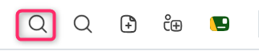
La recherche rapide d’un patient se fait par l’icône gauche, soit par le nom, le numéro de téléphone, la date de naissance ou encore le numéro de sécurité sociale (dit NIR = Numéro d’Inscription au Répertoire).
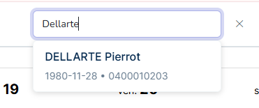
L’utilisateur accède alors à la page du Dossier patient concerné.
Recherche & Export
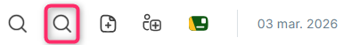
L’icône “Recherche & Export” permet d’effectuer une recherche depuis plusieurs filtres proposés, afin d’en faire un export final.
Cet export permet aux praticiens d’identifier les tendances sur leurs interventions, permettant d’améliorer les pratiques et mieux adapter les soins. Mais également de participer à des études cliniques.
Sur l’interface, il est possible d’appliquer plusieurs filtres issus de deux catégories : “Identité & Tags” et “Traitements”.
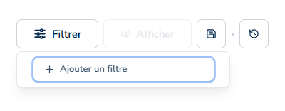
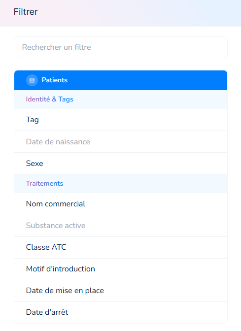
Exemple ci-dessous avec le filtre de “Substance active” (catégorie : Traitements) et la “Date de naissance” (catégorie : Identité & Tags)
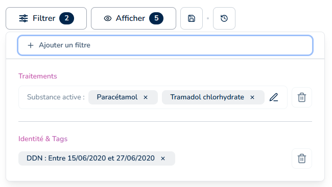
Il est possible d’adapter le format des données en cliquant sur le module “Afficher” et en sélectionnant les champs souhaités.
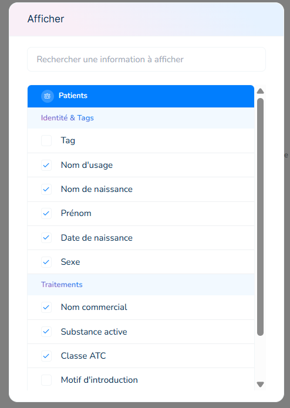
Le logiciel permet alors d’en faire un export au format .XLS
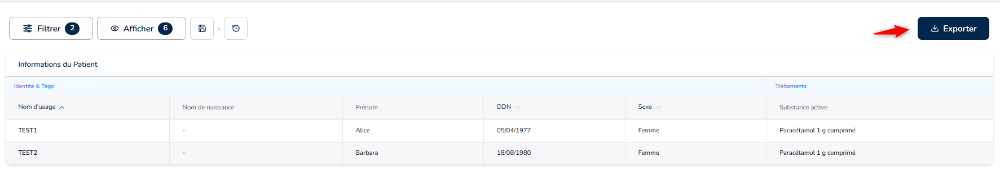
Import de documents
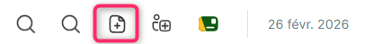
La fonction d’import permet d'importer les documents patients de plusieurs façons :
- Depuis l’ordinateur de l’utilisateur directement essentiellement au format PDF, JPEG et PNG.
- Depuis le Dossier Médical Partagé (DMP).
- Depuis la Messagerie Sécurisée de Santé (MSS).
Il est aussi possible de prendre une photo avec un smartphone afin de l’importer sur la solution.
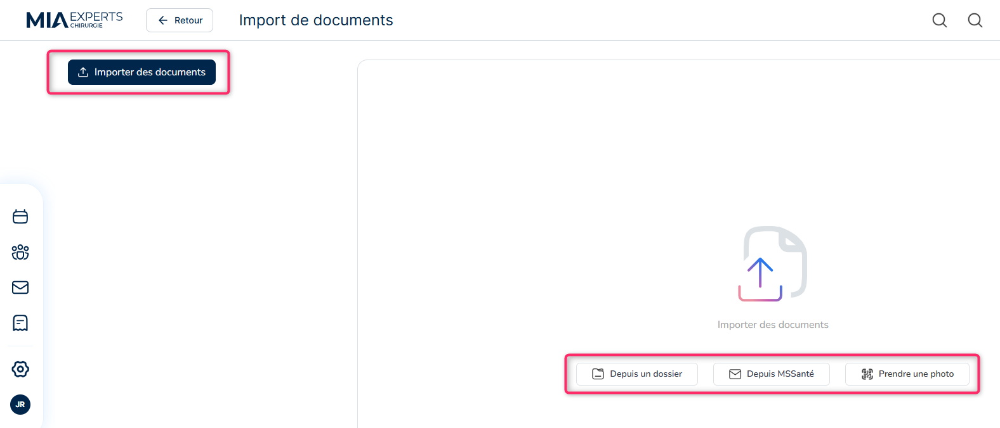
Cela permet au praticien ou à ses salariés de classer l’ensemble des documents du patient dans le dossier correspondant. Une analyse est faite automatiquement, reconnaissant l'identité du patient, la date liée au document, et permet d’en résumer l’objet tout en le classant.
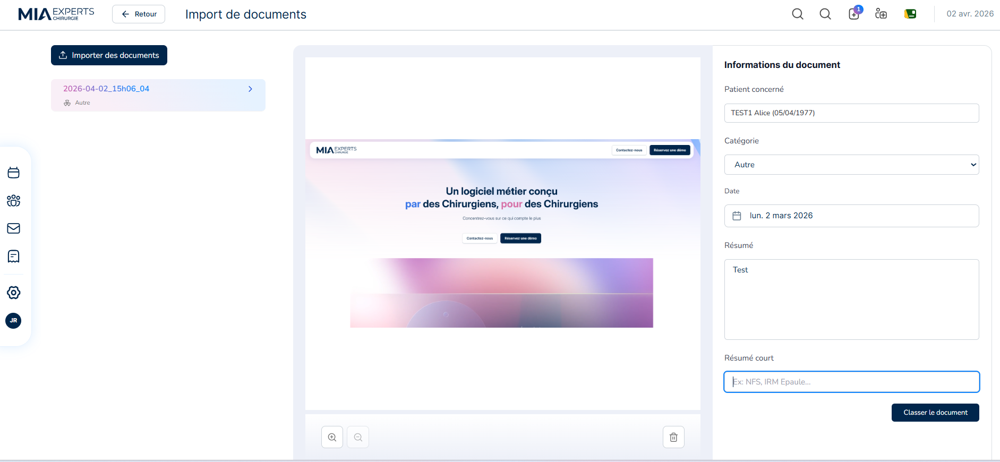
Colonne de gauche : La liste des documents non encore classés apparait.
En cliquant sur le document, un aperçu apparait dans la colonne centrale.
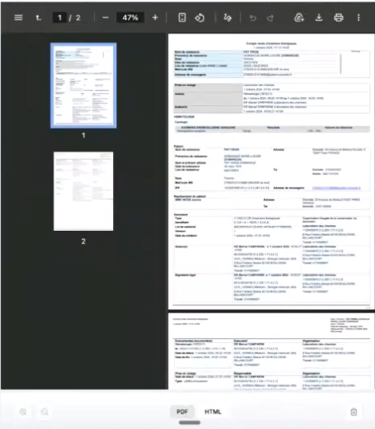
Colonne de droite : Le logiciel travaille pour récupérer les informations du patient automatiquement, si ce dernier est présent dans la base de données. Il est aussi possible de chercher le patient et de renseigner les éléments manuellement.
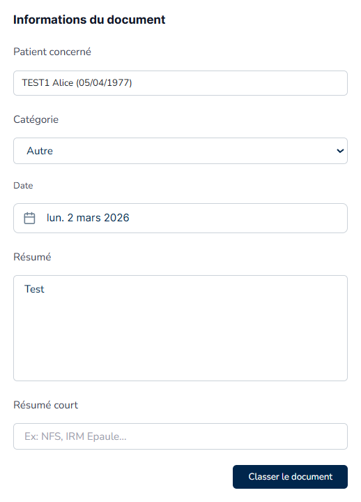
Une fois les éléments vérifiés, le document peut être classé dans le dossier patient en cliquant sur le bouton “Classer le document”.
Création d'une fiche patient
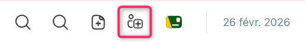
La création d'une fiche patient peut se faire via cette icône, soit manuellement, soit en cliquant sur le bouton "Charger la Carte Vitale" qui permet de pré-remplir automatiquement les données du patient. Cette méthode est plus complète que la création depuis l'agenda, qui propose moins de champs à renseigner, et elle réduit les risques d'erreurs de saisie manuelle.
Si le praticien souhaite récupérer l’INS du patient, il lui faudra renseigner sa carte CPS au préalable
L’identité du nouveau patient doit faire l’objet d’une validation par un document officiel, afin de permettre la transmission au DMP.
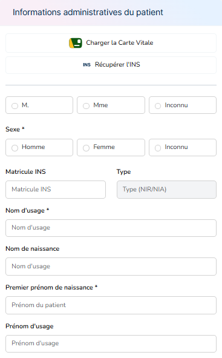
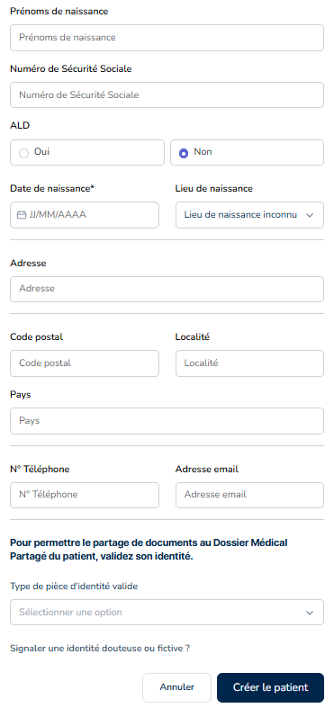
Facturation à Stellair
Dans la version bêta, il vous suffira de vous rendre sur l'espace dédié Stellait afin de procéder à la facturation.
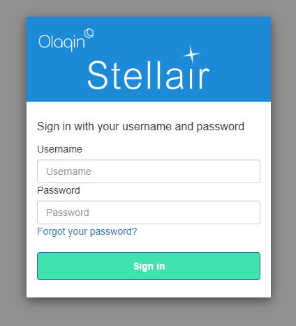
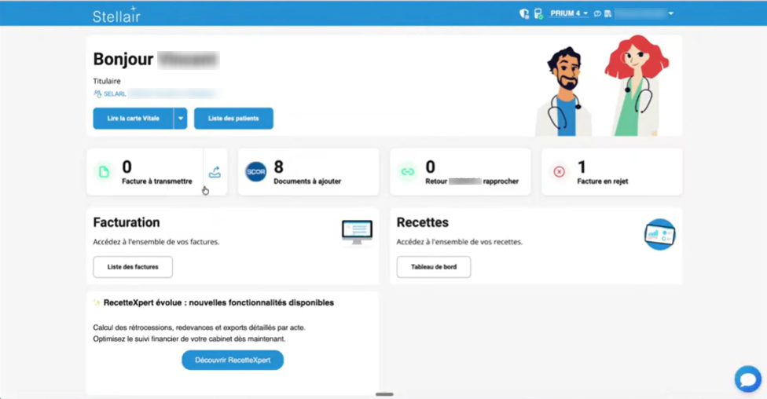
Agenda du jour
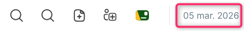
Une vue “agenda du jour” est proposée lorsque l’on clique sur la date.
Elle affiche une lecture chronologique des consultations prévues pour la journée, indiquant :
- l’ordre de passage des patients,
- les statuts en temps réel (en salle d’attente, en consultation),
- l’accès rapide aux documents liés à la consultation,
- les actions de facturation.
Dans la version de production un panneau latéral droit permettra de suivre : les patients à facturer, les patients déjà facturés, les patients non venus. Cette option n'est pas encore disponible dans la version bêta.
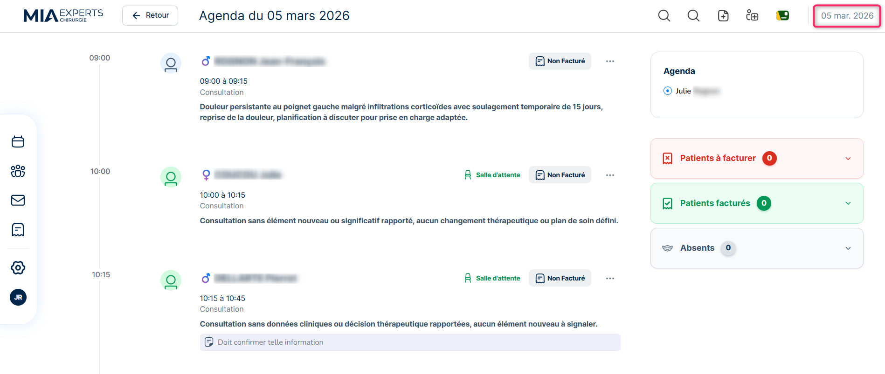